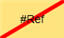

Creating a Basic Symbol
In its simplest form, a symbol is a graphic made up of drawing elements on the graphic canvas in the Graphics Editor. Each drawing element has a series of associated properties that can be used to customize the element. When you drag a symbol onto a graphic a symbol instance is created.
In practice, a symbol is a reusable graphic image that represents a piece of equipment, floor, or any component or entity. A symbol can also represent a command on a graphic.
Select the topic related to your task:
Create a Symbol

NOTE:
You must have Graphic Editor Application rights to create, edit, or delete a symbol. Graphic Editor level access is defined by the Security application.
- You want to create a new symbol.
- System Manager is in Engineering mode.
- In the System Browser, select Application View.
- Select Graphics.
- From the File menu, select New Symbol.
- A blank symbol displays in the Graphics Editor work area.
- Draw, design, and assign evaluations and mappings to the symbol as necessary.
- Click Save
 .
. - The Save dialog box displays.
- From the Project folder, navigate to the appropriate library and click the associated Symbols folder.
- Enter a name in the Name field, and click Save.
- The symbol is saved in the designated Symbols folder in two file formats: PNG and .CCS. The symbol can be previewed in the Graphics Library Browser.
Set a Symbol Reference Point
The anchor is used to specify the origin of the symbol when it is displayed as an instance on the canvas
NOTE: If the anchor is not visible, the top left corner of the bounding rectangle and all the symbol elements are used for positioning.
- The Element Tree view is displayed.
- A blank Symbol is open or you have an element(s) on the canvas.
- In the Element Tree, click the Visible
 checkbox associated with the Anchor.
checkbox associated with the Anchor. - The anchor
 displays on the canvas.
displays on the canvas. - From the Elements group, use the elements as needed to create the Symbol image.
- Click and drag the anchor to the desired reference location of the Symbol.
Customize the Alarm Placement on a Symbol
You can customize where the alarm indicator displays on a Symbol in the Flex Client Graphics Viewer when it is in alarm. For background information, see Symbol Basics.
NOTE: You can use any of the drawing elements to create an alarm-anchor indicator. This example uses the ellipse element.
- In the Graphics Editor, you have a Symbol open that you are engineering.
- From the Ribbon, in the Elements group, select the Rectangle
 element, or any drawing element.
element, or any drawing element. - Draw a square or shape where you want the alarm indication to display in runtime.
- TIP: To draw a square, press the CTRL key when you draw the square element on the canvas.
- In the Element Properties view, in the Description field, type: Alarm-Anchor.
- The text is not case-sensitive.
- In the Layout properties section, make sure the Visible checkbox is not selected.
- The alarm-anchor element will not be visible on the graphic.
- From the toolbar, click Save .
- The position has been set for the Symbol’s alarm-indicators in the Flex Client.
Save a Project Symbol
- You have a Symbol open in the Graphics Editor and would like to save your changes.
- From the File menu, click one of the following:
- Save: Saves the active graphic or symbol with the current name.
- Save As: Displays the Save As dialog box. Enter a Name for the symbol and navigate to the Library Symbols folder where you want to store the Symbol.
- Save All: Saves all the open graphics and Symbols with their current names and storage locations.
Set the Default Symbol and Style
- From the Secondary pane, click on the customized parent Symbol, and drag it to the Primary pane and drop it in the Symbols section.
- The customized Symbol has been added to the Function.
- Right-click on the Symbol, and from the context menu, click Style:
a. Select New Style.
b. In the New Style pane, type a name for the new style, for example: 3D-Custom.
c. Click OK. - The customized Symbol is added to the Function, and is the default Symbol for the Style 3D-Custom.
Applying a Symbol Style during Editing
The symbol style filter allows you to select a symbol style to use for the ensuing symbols instances you drag from System Browser and drop onto the canvas. When you select a style, the symbol associated with that style in the function associated with the data point displays. If that style symbol does not exist, the next similar style is taken. For more information on style and symbol selection, see Symbols Styles and Function.
- From the Options tab, in the Symbol Options group, select one of the options from the Symbol Style Filter drop-down menu. The available options are project-specific.
- The style chosen displays in the Style menu.
- Click the radial button next to the Symbol type you want to use: Symbol or Command
- Drag the object or symbol from System Browser or from the Library Browser and drop it on the active canvas.
TIP: you can also press the CTRL key and drag a data point from System Browser to the Graphics Editor canvas.
- The correct symbol associated with the style you selected for the object function displays on the canvas.
Edit a Symbol
NOTE:
You must have Graphic Editor Application rights to create, edit, or delete a symbol. Graphic Editor level access is defined by the Security application. Of you do not have the appropriate access rights, the symbol will open in Read-Only mode .
- The Graphics Editor it open and you have an existing symbol and you want to modify.
- To modify an existing symbol do one of the following:
- In the Graphics Editor, navigate to the Graphics Library Browser, and right-click the symbol you want to edit. Click Edit from the menu that displays on right-click.
- Navigate to the appropriate symbol instance on an open graphic and right-click the instance. Click Edit from the menu that displays on right-click.
- In all cases, the symbol opens in the Graphics Editor workspace and is available for editing.
- Make any modifications to the symbol.
- From the ribbon, click
 .
. - From the Reload dialog box, click Yes.
- The symbol is updated in the Graphics Library Browser and all changes are saved.
Delete a Symbol
- A symbol can only be removed from a project by deleting it from the [CustomerProjects] folder.
NOTE:
If there are existing symbol instances with references to the deleted symbol, the symbol instance displays a reference error:
- Navigate to the x:\yyyyyCustomerProjects folder, until you locate the Symbols folder that contains the symbols you want to delete.
- Right-click the symbol you want to delete, and select Delete from the menu that displays on right-click. You can also use the SHIFT key to delete multiple symbols.
- The symbol is deleted from the project completely.